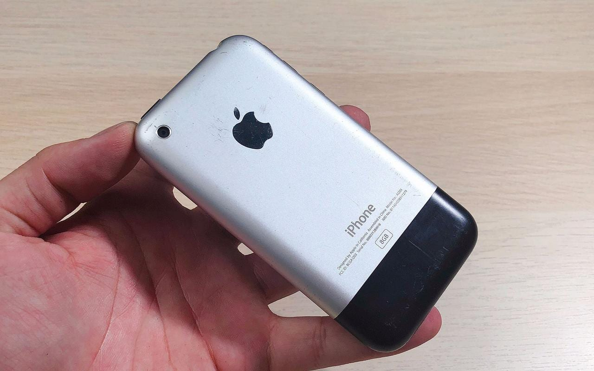

iPhone 初代

多点触控重新发明手机，智能手机时代的开端。
客观评测
初代 iPhone 配备 3.5 英寸 320×480 像素电容式多点触控屏，搭载 412MHz ARM11 处理器与 128MB 内存，提供 4GB/8GB/16GB 存储版本。后置 200 万像素相机不支持录像，网络仅支持 EDGE 与 Wi-Fi，1400mAh 电池官方标称通话 8 小时。以今天的标准看参数寒酸，但多点触控与桌面级 Safari 浏览器在 2007 年遥遥领先。
主观点评
第一次用手指滑动解锁的震撼，只有经历过九宫格键盘时代的人才懂。它不像一台手机，更像从未来穿越而来的物件：干净、直觉、不需要说明书。它当然不完美——没有复制粘贴、没有彩信、电池不可更换、EDGE 上网慢得让人着急。但它终结了按键手机十年的统治，也第一次把手机上网从折磨变成享受。
优点与不足
- 多点触控交互颠覆传统按键操作逻辑
- Safari 浏览器带来真正可用的手机上网体验
- iPod 音乐体验与手机完美融合
- 仅支持 EDGE 网络，移动上网速度慢
- 200 万像素相机不支持录像，成像一般
- 初期无法安装第三方应用，功能扩展受限
参数规格
| 屏幕 | 3.5 英寸 320×480 电容式多点触控屏，163ppi |
|---|---|
| 网络 | GSM/EDGE 2G，支持 Wi-Fi 802.11b/g |
| 处理器 | 三星 S5L8900（ARM11 412MHz），PowerVR MBX Lite 图形核心 |
| 内存 | 128MB 运行内存 |
| 存储 | 4GB / 8GB，另有 16GB 版本，不支持扩展 |
| 电池 | 1400mAh 不可拆卸 |
| 续航 | 通话约 8 小时，待机约 250 小时 |
| 摄像头 | 200 万像素，不支持录像 |
| 系统 | iPhone OS 1.0（可升级至 iOS 3） |
| 尺寸 | 115×61×11.6 毫米 |
| 重量 | 135 克 |
| 其他 | 电容式多点触控、滑动解锁、内置 iPod 音乐体验 |